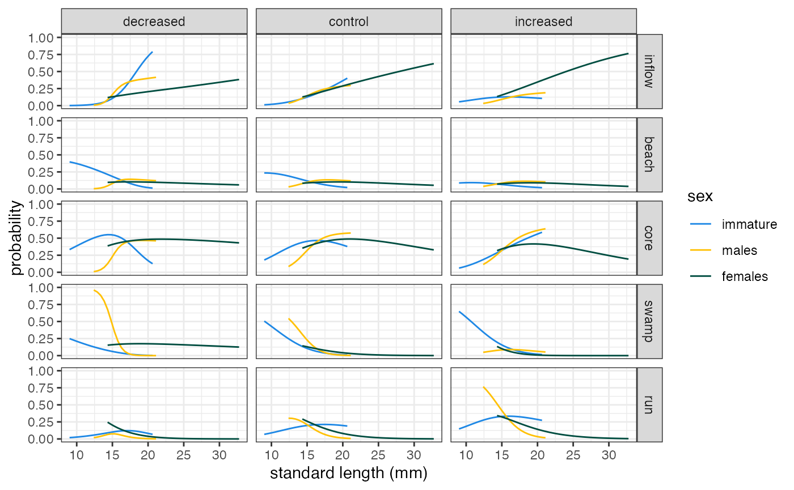
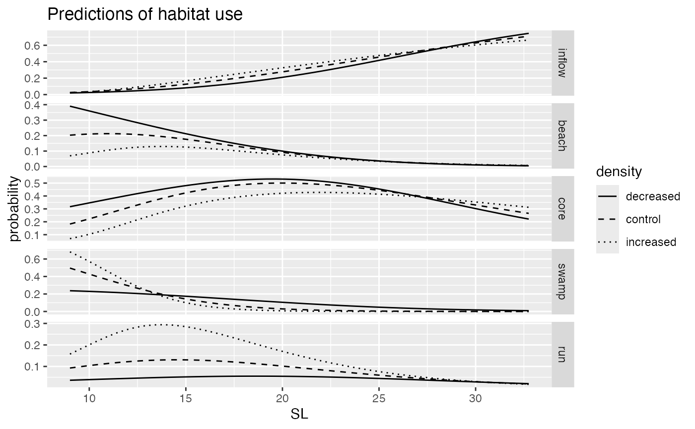

DME-035_DD_habitat_use.RmdIn this vignette, we build up on the previous vignette, adopting again a Discrete-Choice model approach but including density as an independent variable and analyzing in one go the capture and recapture data.
In the previous vignette I was trying to generate estimates based on the capture model, to then predict expected habitat occupancy during the recapture and compare it with the observed occupancy. No clear, visible trend is visible using that approach, therefore, having a somwhat more complicated d-c model that includes density in the first place might shade some light on that.
When analysing capture and recapture at the same time, we create a
mismatch between individuals and choice situation. Now id
and chid have to be defined separately, and what I will do
is to assign chid a value corresponding to 1 for capture
and 2 for recapture. What’s important, is to account correctly for
individuals that are analysed twice: if an individual is recaptured,
it’s id should be the same. The density experienced is a choice
situation specific covariate: the density factor associated with the
capture will always be 1 (since all pools were assumed to be at
equilibrium before being manipulated).
In the analyses here I will adopt the joint model, considering how close the results with the split model were (and the joint is easier).
## Warning: package 'ggplot2' was built under R version 4.3.2## Warning: package 'tidyr' was built under R version 4.3.2## ── Attaching core tidyverse packages ──────────────────────── tidyverse 2.0.0 ──
## ✔ dplyr 1.1.4 ✔ readr 2.1.5
## ✔ forcats 1.0.0 ✔ stringr 1.5.1
## ✔ ggplot2 3.5.1 ✔ tibble 3.2.1
## ✔ lubridate 1.9.3 ✔ tidyr 1.3.1
## ✔ purrr 1.0.2
## ── Conflicts ────────────────────────────────────────── tidyverse_conflicts() ──
## ✖ dplyr::filter() masks stats::filter()
## ✖ dplyr::lag() masks stats::lag()
## ℹ Use the conflicted package (<http://conflicted.r-lib.org/>) to force all conflicts to become errors##
## Attaching package: 'magrittr'
##
## The following object is masked from 'package:purrr':
##
## set_names
##
## The following object is masked from 'package:tidyr':
##
## extract## Loading required package: dfidx## Warning: package 'dfidx' was built under R version 4.3.3##
## Attaching package: 'dfidx'
##
## The following object is masked from 'package:stats':
##
## filter##
## Attaching package: 'rtf'
##
## The following object is masked from 'package:purrr':
##
## done
##
## The following object is masked from 'package:tibble':
##
## view
# this package requires the package guppyDme to be installed. If the user wishes not to install the package, please comment out the "library(guppyDme)" line and run instead the lines commented out below
#### If you have the guppyDme package installed
# loading package
library(guppyDme)
# # If you do NOT wish to install the guppyDme package, please uncomment and run the following two lines of code, adding the package functions to the Global Environment and loading the data
# source(file.path(here::here(), "R", "package_functions.R"))
# load(file.path(here::here(), "data", "DMEdata.rda"))
# loading data
data <- DMEdata
pool_comp <- readRDS(file.path(here::here(), "vignettes", "DME_pool_composition.rds"))
treatment_tab <- readRDS(file.path(here::here(), "vignettes", "DME_density_factor_in_treatments.rds"))
# I am creating an additional column in the dataset, redefining sex_stage classes
# I am also transforming SL into numeric, substituting the "<10", and
# every numeric value below 10mm, with a numeric `set_value`.
set_value <- 9
data %<>%
mutate(SL = replace(SL, SL == "<10", set_value),
SL = as.numeric(SL),
SL = replace(SL, SL < 10, set_value),
sex_stage = score_sexst(., f_threshold = 14, f_unit = "SL"),
sex_stage = factor(sex_stage, levels = c("F", "I", "M")))## Warning: There were 3 warnings in `mutate()`.
## The first warning was:
## ℹ In argument: `SL = as.numeric(SL)`.
## Caused by warning:
## ! NAs introduced by coercion
## ℹ Run `dplyr::last_dplyr_warnings()` to see the 2 remaining warnings.We am using, once again, this vignette to guide the decision on data handling and model construction.
Below, we include pool composition info (relative benthic area for each habitat present) and density information (which is 1 for every pool at capture, and corresponds to the modified density during the recap).
# adding pool composition info
data <- pool_comp %>%
mutate(recap = ifelse(cap_recap == "cap", 0, 1)) %>%
select(recap, streamID, patchID,
A = relA, B = relB, C = relC, D = relD, E = relE, tot_ba = tot) %>%
left_join(data, .)## Adding missing grouping variables: `cap_recap`
## Joining with `by = join_by(streamID, recap, patchID)`
# adding density info
data <- treatment_tab %>%
add_column(recap = 1) %>%
select(-treatment) %>%
rename(pool_density = density_factor) %>%
left_join(data,.) %>%
mutate(pool_density = ifelse(recap == 0, 1, pool_density))## Joining with `by = join_by(streamID, recap, patchID)`The dataset now contains a lot of information that we don’t need, so
we can trim it down. We need to include a variable for individual
id and a variable for chid. When doing this,
we need to be careful with the id assigned to cohort marks. If we were
to simply use the markID variable to generate id, all
cohort marks will be considered as repeated measures of the same
individual.
# trimming only the needed data
# - excluding Taylor mouth
# - excluding undefined habitat
hdata <- data %>%
filter(streamID != "TM", !is.na(habitat)) %>%
select(markID, SL, sex_stage, habitat, pool_density, recap, isbabyMark, isCohort,
A, B, C, D, E)
# here I will extract all individuals who have more than 1
# record per cap/recap
not_unique_ids <- as.data.frame(table(hdata$markID, hdata$recap)) %>%
filter(Freq > 1) %>%
pull(Var1) %>%
as.character()
# to assign unique ids, first I generate a column of actually unique ids
# that are above the maximum number of unique markIDs
# then, I can draw unique values from this column for individuals
# that don't already have a unique id
hdata %<>%
mutate(bench_id = (max(as.numeric(markID)) + 1):(max(as.numeric(markID)) + nrow(.)),
id = ifelse(!(markID %in% not_unique_ids), as.numeric(markID), bench_id)) %>%
arrange(id) %>%
mutate(chid = 1:nrow(.)) %>%
select(-bench_id)Now we are transforming the data into the long format, to allow for the set of alternative to vary amonge choices (see here ).
# reshaping it as a long format
hdata %<>%
gather(A, B, C, D, E, key = "alt", value = "ba") %>%
mutate(choice = as.numeric(habitat == alt)) %>%
arrange(chid) %>%
select(id, chid, markID, alt, choice, SL, sex_stage, ba, pool_density, recap) %>%
filter(ba > 0)
head(hdata)## # A tibble: 6 × 10
## id chid markID alt choice SL sex_stage ba pool_density recap
## <dbl> <int> <fct> <chr> <dbl> <dbl> <fct> <dbl> <dbl> <dbl>
## 1 2 1 105Y A 0 23.4 F 0.428 1 0
## 2 2 1 105Y B 0 23.4 F 0.265 1 0
## 3 2 1 105Y C 1 23.4 F 0.162 1 0
## 4 2 1 105Y D 0 23.4 F 0.145 1 0
## 5 3 2 1B A 0 11.6 I 0.428 1 0
## 6 3 2 1B B 0 11.6 I 0.265 1 0
# re-centering pool_density, creating factorial treatment
hdata %<>%
mutate(pool_density = pool_density - 1,
treatment = ifelse(pool_density == 0, "control",
ifelse(pool_density > 0, "increased", "decreased")))
# I need to make sure that every individuals has a decision assigned.
# In the case an individual was found in a habitat at ba 0, this would not be the case
# of course, such instance would be a mistake, and should be fixed.
n_rows <- hdata %>%
group_by(id, markID, chid) %>%
summarise(didPick = sum(choice)==1) %>%
filter(!didPick) %>%
nrow()## `summarise()` has grouped output by 'id', 'markID'. You can override using the
## `.groups` argument.
# check to see if any fish did not decide
stopifnot(n_rows == 0)
# all goodWe can now transform the data in the appropriate format with the
function mlogit.data(), and we are ready for the
analysis.
data_mlogit <- mlogit.data(as.data.frame(hdata), shape = "long",
alt.var = "alt", id.var = "id", chid.var = "chid")We need to be careful about how we specify the formula. One of
package:mlogit’s own vignettes
has a pretty clear guide.
The formula is split in three parts separated by the symbol
|., in the form
The three parts represent 3 different tipe of variables:
In our analyses, all we have are part I (benthic area
ba) and part II (standard length SL, sex
sex_stage and density pool_density). We might
try to introduce also whether the choice was made in the capture or the
recapture (recap), which would also fall into part II.
Let’s try and run the model.
NOTE: in contrast with what done before, we are here not running a model with treatment as a factor because the model will not converge. The number of interactions is likely a little too big.
dcmodel <- mlogit(choice ~ ba | SL * sex_stage * pool_density, data_mlogit, reflevel = "A")
summary(dcmodel)##
## Call:
## mlogit(formula = choice ~ ba | SL * sex_stage * pool_density,
## data = data_mlogit, reflevel = "A", method = "nr")
##
## Frequencies of alternatives:choice
## A B C D E
## 0.139325 0.142653 0.503566 0.148359 0.066096
##
## nr method
## 7 iterations, 0h:0m:1s
## g'(-H)^-1g = 2.4E-06
## successive function values within tolerance limits
##
## Coefficients :
## Estimate Std. Error z-value Pr(>|z|)
## (Intercept):B 1.1674167 0.8991584 1.2983 0.1941692
## (Intercept):C 2.3176553 0.5301321 4.3718 1.232e-05 ***
## (Intercept):D 5.3399777 1.6773118 3.1837 0.0014543 **
## (Intercept):E 6.1904968 1.2523596 4.9431 7.690e-07 ***
## ba 2.5159554 0.2359196 10.6645 < 2.2e-16 ***
## SL:B -0.1099154 0.0429682 -2.5581 0.0105257 *
## SL:C -0.0899314 0.0244970 -3.6711 0.0002415 ***
## SL:D -0.3632761 0.0934348 -3.8880 0.0001011 ***
## SL:E -0.3734266 0.0682696 -5.4699 4.503e-08 ***
## sex_stageI:B 6.4004604 1.1942450 5.3594 8.349e-08 ***
## sex_stageI:C 2.5702891 0.8800267 2.9207 0.0034925 **
## sex_stageI:D 4.3141214 1.8716277 2.3050 0.0211660 *
## sex_stageI:E -2.5065488 1.5053299 -1.6651 0.0958896 .
## sex_stageM:B -0.2363717 3.5323526 -0.0669 0.9466484
## sex_stageM:C -1.1718102 2.4614838 -0.4761 0.6340327
## sex_stageM:D 8.1603652 6.7204897 1.2143 0.2246517
## sex_stageM:E 4.3636107 6.0600425 0.7201 0.4714864
## pool_density:B 0.1782479 3.2920565 0.0541 0.9568198
## pool_density:C 0.6107412 2.0200165 0.3023 0.7623893
## pool_density:D 8.0267115 7.3670819 1.0895 0.2759170
## pool_density:E -1.1580577 7.5099624 -0.1542 0.8774498
## SL:B -0.3983090 0.0737992 -5.3972 6.769e-08 ***
## SL:C -0.1499731 0.0548431 -2.7346 0.0062459 **
## SL:D -0.2915782 0.1145791 -2.5448 0.0109348 *
## SL:E 0.1584038 0.0917967 1.7256 0.0844206 .
## SL:B 0.0223629 0.2016629 0.1109 0.9117016
## SL:C 0.0670554 0.1404813 0.4773 0.6331300
## SL:D -0.5057856 0.4088878 -1.2370 0.2160949
## SL:E -0.3051034 0.3631274 -0.8402 0.4007904
## SL:B -0.0408326 0.1588940 -0.2570 0.7971939
## SL:C -0.0642783 0.0940971 -0.6831 0.4945397
## SL:D -0.5774917 0.3861778 -1.4954 0.1348091
## SL:E 0.0962236 0.4251557 0.2263 0.8209482
## sex_stageI:B -11.0498652 4.3096914 -2.5640 0.0103486 *
## sex_stageI:C -12.6920015 3.1995323 -3.9668 7.283e-05 ***
## sex_stageI:D -15.7083906 8.3286594 -1.8861 0.0592862 .
## sex_stageI:E -4.2471880 8.6599864 -0.4904 0.6238239
## sex_stageM:B 0.4481004 15.6214105 0.0287 0.9771158
## sex_stageM:C -0.2484898 10.7429269 -0.0231 0.9815461
## sex_stageM:D -29.4673109 26.3404714 -1.1187 0.2632645
## sex_stageM:E 2.1251563 40.9060792 0.0520 0.9585669
## SL:B 0.6843901 0.2755139 2.4840 0.0129898 *
## SL:C 0.8220309 0.2079032 3.9539 7.688e-05 ***
## SL:D 1.1403822 0.5240143 2.1762 0.0295371 *
## SL:E 0.3307430 0.5401152 0.6124 0.5403020
## SL:B 0.0407358 0.8961742 0.0455 0.9637445
## SL:C 0.0997719 0.6147788 0.1623 0.8710782
## SL:D 1.9324551 1.5872610 1.2175 0.2234225
## SL:E -0.0097941 2.4021226 -0.0041 0.9967468
## ---
## Signif. codes: 0 '***' 0.001 '**' 0.01 '*' 0.05 '.' 0.1 ' ' 1
##
## Log-Likelihood: -2178.5
## McFadden R^2: 0.23859
## Likelihood ratio test : chisq = 1365.3 (p.value = < 2.22e-16)We will export the output as a doc table.
## [1] "coefficients" "logLik" "gradient" "hessian"
## [5] "est.stat" "fitted.values" "probabilities" "linpred"
## [9] "indpar" "residuals" "omega" "rpar"
## [13] "nests" "model" "freq" "formula"
## [17] "call" "CoefTable" "lratio" "mfR2"
ptable <- round(as.data.frame(summary(dcmodel)$CoefTable), 3) %>%
add_column(coeff = rownames(as.data.frame(summary(dcmodel)$CoefTable)), .before = 1)
rtffile <- RTF(file.path(here::here(), "vignettes", "DCM_output.doc")) # this can be an .rtf or a .doc
addTable(rtffile, ptable)
done(rtffile)The interpretation of the results is somewhat tricky, so we will plot the estimated probabilities as done in the previous vignette, but this time also including the density values.
sls <- modelr::seq_range(hdata$SL, n= 50)
sxs <- levels(hdata$sex_stage)
ds <- c(-.5, 0, .5)
# then using expand grid I can create all combinations.
# Each of them is an hypothetical individual, so whould receive an id
block <- cbind(expand.grid(SL = sls, sex_stage = sxs, pool_density = ds)) %>%
add_column(id = 1:nrow(.))
# I can now expand this block to include all possible alternatives
# here, I am weighing them all the same
habs <- data.frame(alt = unique(hdata$alt),
ba = .2)
mock_d <- merge(habs, block, by = NULL)We are now ready to generate predictions and plot them.
# generating predictions and storing them side by side with the block
# (which unlike mock_d does not have repeated individuals once per habitat)
pred_mock <- cbind(block,
predict(dcmodel, newdata = mock_d, type = "probs")
)
# reshaping dataset to long(er) format, and releveling sex_stage
pred_mock %<>%
gather(A, B, C, D, E, key = habitat, value = probability) %>%
mutate(sex_stage = factor(sex_stage, levels = c("I", "M", "F")))
#### TRIMMING
##### COPY-PASTING this NOW, REPLACE WITH NEW in_range FUNCTION!
low_m <- min(as.numeric(data %>% filter(sex_stage == "M") %>% pull(SL)), na.rm = T)
low_f <- min(as.numeric(data %>% filter(sex_stage == "F") %>% pull(SL)), na.rm = T)
hi_m <- max(as.numeric(data %>% filter(sex_stage == "M") %>% pull(SL)), na.rm = T)
hi_i <- max(as.numeric(data %>% filter(sex_stage == "I") %>% pull(SL)), na.rm = T)
pred_mock %<>%
filter(sex_stage == "I" & SL < hi_i |
sex_stage == "F" & SL > low_f |
sex_stage == "M" & SL > low_m & SL < hi_m) %>%
mutate(treatment = plyr::mapvalues(pool_density,
c(-0.5, 0, 0.5),
c("decreased", "control", "increased")),
treatment = factor(treatment, levels = c("decreased", "control", "increased")),
sex = plyr::mapvalues(sex_stage,
c("I", "M", "F"),
c("immature", "males", "females")))
# plotting
hcp <- ggplot(pred_mock, aes(x = SL, y = probability, colour = sex)) +
geom_line() +
ylim(0,1) + xlab("standard length (mm)") +
scale_color_manual(values = c("#1E88E5", "#FFC107", "#004D40")) +
facet_grid(habitat ~ treatment, scales = "free", labeller = labeller(habitat = hablab())) +
theme_bw()
hcp
jpeg(file.path(here::here(), "vignettes", "figures", "habitat_choice.jpeg"),
width = 8, height = 6, units = "in", res = 400)
hcp
dev.off()## agg_png
## 2A few quick thoughts on what’s going on here:
The inflow (habitat “A”) is thought to be a good quality habitat for drift feeding. Drift feeding requires large enough mouths, so we expect large individuals to benefit from it. We can observe that while in the control and increased density large females dominate this habitat, in the decrease treatment this habitat becomes accessible to relatively large males and immatures as well.
Large females are seen to abandon the core and swamp area they occupy at low density to move predominantly in the inflow at high density. This again can be due to a shift in diet, making use of the harder to get and probably easier to monopolise drift feeding options, instead of using highly demanded resources in “everyone’s land” (the core).
Small juveniles tend to occupy more central habitats (core and beach at it associated) at low density, but seem to be relegated to marginal areas (swamp) when density is high. Swamps at high density seem a pretty secure habitat, with few large individuals and often marginal.
Both these results and the previous show a remarkable consistency among different sexes, whilst most of the variation seem nudged in the size. We will here run a very similar model to that above, but ignoring sex_stage.
dcmodel_sexless <- mlogit(choice ~ ba | SL * pool_density, data_mlogit, reflevel = "A")
summary(dcmodel_sexless)##
## Call:
## mlogit(formula = choice ~ ba | SL * pool_density, data = data_mlogit,
## reflevel = "A", method = "nr")
##
## Frequencies of alternatives:choice
## A B C D E
## 0.139734 0.142586 0.503327 0.148289 0.066065
##
## nr method
## 6 iterations, 0h:0m:0s
## g'(-H)^-1g = 4.19E-05
## successive function values within tolerance limits
##
## Coefficients :
## Estimate Std. Error z-value Pr(>|z|)
## (Intercept):B 4.643271 0.326871 14.2052 < 2.2e-16 ***
## (Intercept):C 3.064061 0.265558 11.5382 < 2.2e-16 ***
## (Intercept):D 7.196296 0.381254 18.8753 < 2.2e-16 ***
## (Intercept):E 3.135687 0.384317 8.1591 4.441e-16 ***
## ba 2.522109 0.232028 10.8699 < 2.2e-16 ***
## SL:B -0.287397 0.020177 -14.2439 < 2.2e-16 ***
## SL:C -0.123616 0.013827 -8.9404 < 2.2e-16 ***
## SL:D -0.471721 0.027866 -16.9284 < 2.2e-16 ***
## SL:E -0.206868 0.023638 -8.7516 < 2.2e-16 ***
## pool_density:B -2.779382 1.261758 -2.2028 0.02761 *
## pool_density:C -2.444741 1.036089 -2.3596 0.01830 *
## pool_density:D 4.218638 1.893560 2.2279 0.02589 *
## pool_density:E 1.888220 2.093610 0.9019 0.36711
## SL:B 0.103055 0.077567 1.3286 0.18398
## SL:C 0.088743 0.053622 1.6550 0.09793 .
## SL:D -0.365280 0.143431 -2.5467 0.01087 *
## SL:E -0.059210 0.125880 -0.4704 0.63809
## ---
## Signif. codes: 0 '***' 0.001 '**' 0.01 '*' 0.05 '.' 0.1 ' ' 1
##
## Log-Likelihood: -2226.6
## McFadden R^2: 0.22233
## Likelihood ratio test : chisq = 1273.1 (p.value = < 2.22e-16)
AIC(dcmodel_sexless, dcmodel)## df AIC
## dcmodel_sexless 17 4487.120
## dcmodel 49 4455.028The model including sex has a much better fit, but we’ll plot to visualize the results anyways.
# removing sex-stage variable
mock_sexless <- mock_d %>%
filter(sex_stage == "I") %>%
select(-sex_stage)
# generating predictions
pred_mock_sexless <- cbind(block %>% filter(sex_stage == "I") %>% select(-sex_stage),
predict(dcmodel_sexless, newdata = mock_sexless, type = "probs"))
# reshaping
pred_mock_sexless %<>%
gather(A, B, C, D, E, key = habitat, value = probability) %>%
mutate(density = plyr::mapvalues(pool_density,
c(-0.5, 0, 0.5),
c("decreased", "control", "increased")),
density = factor(density, levels = c("decreased", "control", "increased")))
# plotting
ggplot(pred_mock_sexless, aes(x = SL, y = probability)) +
geom_line(aes(linetype = density)) +
scale_linetype_manual(values=c("solid", "dashed", "dotted")) +
facet_grid(habitat ~., scales = "free", labeller = labeller(habitat = hablab())) +
ggtitle("Predictions of habitat use")